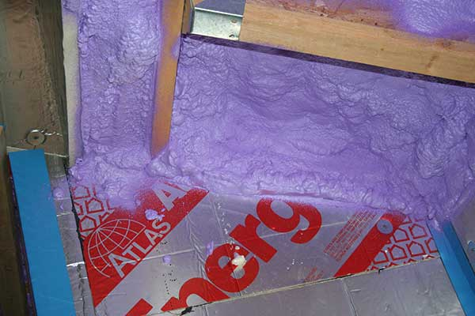

Walls have an R-value of 44 achieved with a combination of rock-wool insulation and foil faced polyisocyanurate panels.
The ceiling has an R-value of 54 achieved with a 9” layer of sprayed high density foam. (REF High R expectations)
Selection of insulating materials was guided by the following considerations:
For example, the ceiling consist of a series of parallel I-joists. Sprayed foam has the advantages of being easy to apply. It also provides both insulation and a vapour barrier. Other materials would have required a separate application of a vapour barrier. This would have proved difficult given that some ceilings are 20’ high. Electrical fixtures are present within the ceilings and would have created perforation of the envelope.
Sprayed high density foam in the ceilings is simple to securely connect to the foam layer of the wall structure. Compound roof angles can be sealed without too much difficulty. (Refer to diagram of wall/roof insulation connection)
Rock-wool batt insulation was selected because it is more pleasant to handle and does not require any particular tools or expertise to install.
Granted, sprayed high density foam is not cheap! However when one weighs the manpower required for other methods, particularly when we are striving for an extremely tight envelope as well as the complexities of the architectural design, it seemed to us to be the least expensive option.
Rock-wool batt insulation is more expensive than glass wool but had desirable advantages in our mind. It is also cheaper than spray foam insulation.
Solid foam panels were selected for their insulation and air/vapour barrier properties. They are less likely to be inadvertently perforated during installation, penetrations for exterior electrical outlets are effectively sealed with spray foam and the panels are light, easy for one person to handle and apply.